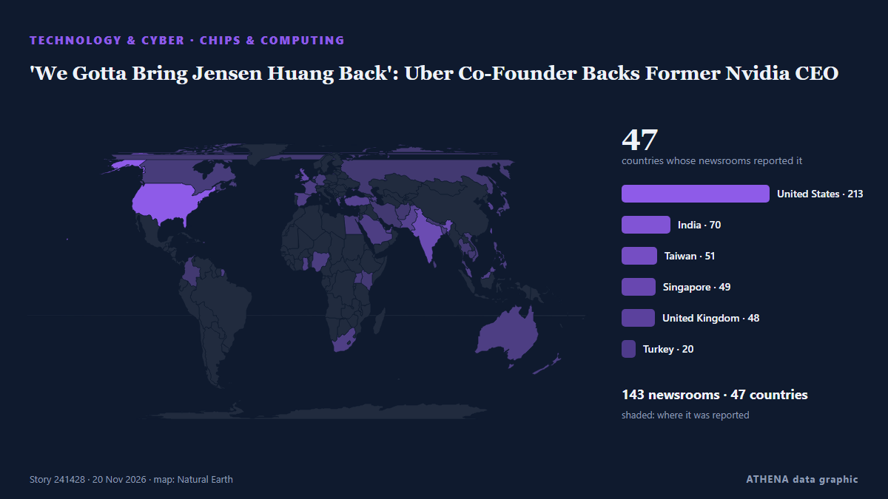

Technology, AI & Cybersecurity
SponsoredPresented by  Cybernetics and Artificial Intelligence Lab Welcome to the Cybernetics and Artificial Intelligence Laboratory, established at the Department of Business Administration of the National and Kapodistrian University of Athens. The lab is headed by Professor Dimitrios Thomakos. The lab aims to do research that can be published in top venues. Our research uses tools and methods of Artificial Intelligence, and lies in the following areas: - Forecasting - Decision making - Cyber security - Finance We are always looking forward to collaborating with exceptional students!
Cybernetics and Artificial Intelligence Lab Welcome to the Cybernetics and Artificial Intelligence Laboratory, established at the Department of Business Administration of the National and Kapodistrian University of Athens. The lab is headed by Professor Dimitrios Thomakos. The lab aims to do research that can be published in top venues. Our research uses tools and methods of Artificial Intelligence, and lies in the following areas: - Forecasting - Decision making - Cyber security - Finance We are always looking forward to collaborating with exceptional students!

Chips & computing'We Gotta Bring Jensen Huang Back': Uber Co-Founder Backs Former Nvidia CEO
Uber co-founder Travis Kalanick threw his weight behind the growing campaign to reinstate Jensen Huang who stepped down as Nvidia CEO last week. from NDTV
| 7 Nov | 37 |
|---|---|
| 8 Nov | 42 |
| 9 Nov | 104 |
| 10 Nov | 114 |
| 11 Nov | 83 |
| 12 Nov | 74 |
| 13 Nov | 87 |
| 14 Nov | 39 |
| 15 Nov | 44 |
| 16 Nov | 113 |
| 17 Nov | 102 |
| 18 Nov | 99 |
| 19 Nov | 84 |
| 20 Nov | 19 |
Trump ousts cyber director after tech outages spark criticism
The Trump administration has faced criticism over its response to the tech outages. from The Straits Times
US approved nearly 900,000 Nvidia and AMD AI chips for China. Raises more questions than answers.
The disclosure adds to political pressure for tighter China chip rules, a risk for Nvidia and AMD’s China revenue at a time when AI and semiconductor shares are already being sold hard across Asia. from investingLive (ForexLive)
European Commission hit by major cyberattack
The attack has disrupted internal systems for more than ten days, with investigators still assessing whether sensitive staff data was compromised. from The Portugal News
Anthropic surges in market debut after biggest IPO on record, despite fears that AI is running amok
The artificial intelligence giant Anthropic rose sharply Thursday after making the biggest public stock offering ever, at one point s. from Mainichi (English)
GTA 6 launches after 13-year wait, breaking pre-order records
Grand Theft Auto’s latest instalment is out, ending a 13-year wait for one of gaming’s biggest franchises. from Al Jazeera English
A cyberattack using artificial intelligence targeted the EU in October, official says
A cyberattack carried out with artificial intelligence targeted the European Union in October, an official in Brussels said on Thursday, and some of the bloc's digital tools remain offline. from The Canadian Press (via CityNews)
TSMC tightens China AI chip curbs as new US rules close manufacturing loophole, sources say
TAIWAN’s TSMC is tightening restrictions on Chinese chip designers, suspending some previously permitted advanced manufacturing orders and generally… from BusinessWorld
Hackers Leak Visa, Mastercard and JPMorgan Customer Data
A ransomware group breached third-party vendors, not the companies’ own systems. from Decrypt
Air Force One reporters' phones locked away over China spying fears
ABOARD AIR FORCE ONE: Reporters traveling with US President Donald Trump were asked to surrender cell phones they had used in China in a rare security precaution as Air Force One prepared to leave… from New Straits Times
From Apple to Anthropic: World's 10 most valuable companies after blockbuster IPO
Where does Williams F1 backer Anthropic rank in the most valuable F1 sponsors after its November 2026 IPO? from The Race
Anthropic pulled off the biggest IPO ever. What that means, by the numbers
It ends its first trading day at US$97.17 a share, over 17% higher than its offering price. from The Business Times
The seven Anthropic founders who are about to become multi-billionaires
The AI company behind Claude is about to sell its shares on the US stock market - making its founders very rich. from BBC News
Voyager 1 spacecraft reaches one light-day milestone
The spacecraft is now about 26 billion kilometres (16 billion miles) away, according to NASA. from Express Tribune
Anthropic CEO Dario Amodei Says Cancer Will Be a Relic in 10 Years. Researchers Say He’s Missing 1 Key Factor
The co-founder thinks AI will help make cancer and other deadly diseases extinct by 2036. from Inc.
Musk accuses Ukraine’s Zelensky of lying about Starlink
The SpaceX boss said Volodymyr Zelensky asked to use commercial satellites for offensive military operations, but the company declined to do so. from Free Malaysia Today
NASA’s Voyager 1 is an awe-inspiring one light-day away from Earth
It is humanity’s first emissary to cross this monumental threshold way out in interstellar space. from The Globe and Mail
AI lab Anthropic sets stock market record with $81 billion IPO
Anthropic becomes the first "pure play" AI lab to go public, with an eye-watering $1.5 trillion valuation, a bellwether moment amid growing concerns of a financial bubble in the sector. from France 24 English
NGINX2Root: F5 patches five critical NGINX vulnerabilities
F5 has patched five critical vulnerabilities in NGINX, the world’s most widely used open-source web server, that can allow remote code execution under certain conditions. from Help Net Security
Anthropic raises record $81.3 billion in blockbuster IPO
Anthropic ANT.O has raised $81.3 billion in the largest stock-market debut on record after upsizing its offering, valuing the Claude chatbot maker at $1.5 trillion in a deal that defies concerns… from Cyprus Mail
GTA 6 Review: Grand Theft Auto VI is staggering in scale but still grounded in reality
Grand Theft Auto VI is so vast in scale, it has rewritten the rules for what a game can be. from The Scotsman
‘Human’ is Cambridge Dictionary’s word of the year
Other new words added to the dictionary in 2026 included “aura farming” and “looksmaxing”. from The Straits Times
SA vs BAN, 1st Test Day 5 highlights: South Africa beats Bangladesh by 9 wickets
SA vs BAN, 1st Test: Catch all the updates and highlights from Day 5 of the 1st Test between South Africa and Bangladesh being played at the Wanderers Stadium in Johannesburg. from Sportstar
Meta’s ‘secret’ Black Friday sale just started, and it offers up to 25% off the company’s smart glasses
Ray-Ban Meta (Gen 2), Meta Glasses, Oakley Meta HSTN, Oakley Meta Vanguard, and RX Lenses are between 15% and 25% off right now for Meta’s Black Friday sale. more… from 9to5Google
PTA says submarine cable fault may cause internet connectivity issues
The Pakistan Telecommunication Authority (PTA) said on Wednesday that a fault in one of the international submarine cable systems may result in users experiencing internet connectivity issues. from Dawn
Java4Shell OpenJDK flaw: Exploitation is tricky and hinges on specific CPUs (CVE-2026-114938)
CVE-2026-114938, a memory corruption flaw in Open Java Development Kit’s Base64 decoder, can allow unauthenticated attackers to run code on servers hosting widely used Java applications. from Help Net Security
Miami evokes 'Vice City' ahead of Grand Theft Auto 6 launch
Miami landmarks are lighting up with its alter ego, Vice City, in the run-up to the launch. from The Straits Times
GTA 6 Launch Highlights: India Gets Blockbuster Game After 13-Year Wait
GTA 6 Launch Highlights: The latest version of Grand Theft Auto VI (GTA 6) is taking players back to Vice City and other parts of the Leonida state. from NDTV World
NTT, ispace forge alliance for Earth-to-Moon connectivity
NTT and ispace are developing ultra-long-distance optical communication systems and laser-based wireless power transmission systems for use in deep space and on the Moon. from Light Reading
Over half million students set to take annual college entrance exam amid AI cheating concerns
SEOUL, Nov. 19 (Yonhap) -- The annual college entrance exam was set to be held n... from Yonhap (English)
Google signs PPA to buy 50MW geothermal power from Quaise Energy
Google has entered into a PPA to acquire 50MW of geothermal energy from Quaise Energy’s Project Obsidian in Central Oregon, US. from Power Technology
Governments warn Java flaw leaves computer systems open to hackers
Governments around the world sounded the alarm on Wednesday over a critical flaw in the popular programming language Java that could allow hackers to access computer systems, the latest high-profile… from Insurance Journal
It’s launch day for ‘Grand Theft Auto VI’. The 13-year wait is over at midnight
After a 13-year wait, one of entertainment’s biggest releases is finally here. from Fast Company
UN to Debate Rules for ‘Killer Robots’
Concerns grow about their increasing use on the battlefield. from The Straits Times
OpenAI gives NATO access to most advanced cybersecurity AI
NATO operators this month built and deployed AI agents in an exercise, with help from OpenAI. from Defense One